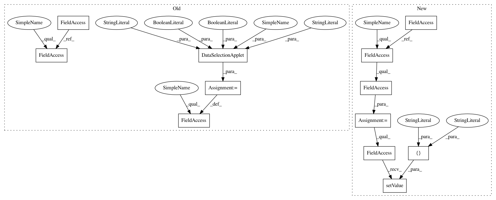

4b35855d4ea461644b8e49caf9679e39ddc4877c,ilastik/workflows/objectClassification/objectClassificationWorkflowBinary.py,ObjectClassificationWorkflowBinary,__init__,#ObjectClassificationWorkflowBinary#Any#,11
Before Change
////////////////////////////////////////////
//// Create applets
self.rawDataSelectionApplet = DataSelectionApplet(self,
"Input: Raw",
"Input Raw",
batchDataGui=False,
force5d=True)
self.dataSelectionApplet = DataSelectionApplet(self,
"Input: Segmentation",
"Input Segmentation",
batchDataGui=False,
force5d=True)
self.objectExtractionApplet = ObjectExtractionApplet(workflow=self)
self.objectClassificationApplet = ObjectClassificationApplet(workflow=self)
self._applets = []
self._applets.append(self.rawDataSelectionApplet)
self._applets.append(self.dataSelectionApplet)
self._applets.append(self.objectExtractionApplet)
self._applets.append(self.objectClassificationApplet)
After Change
////////////////////////////////////////////
//// Create applets
self.dataSelectionApplet = DataSelectionApplet(self,
"Input Data",
"Input Data",
batchDataGui=False,
force5d=True)
opDataSelection = self.dataSelectionApplet.topLevelOperator
opDataSelection.DatasetRoles.setValue( ["Raw Data", "Segmentation Image"] )
self.objectExtractionApplet = ObjectExtractionApplet(workflow=self)
self.objectClassificationApplet = ObjectClassificationApplet(workflow=self)
In pattern: SUPERPATTERN
Frequency: 3
Non-data size: 12
Instances
Project Name: ilastik/ilastik
Commit Name: 4b35855d4ea461644b8e49caf9679e39ddc4877c
Time: 2013-04-23
Author: bergs@janelia.hhmi.org
File Name: ilastik/workflows/objectClassification/objectClassificationWorkflowBinary.py
Class Name: ObjectClassificationWorkflowBinary
Method Name: __init__
Project Name: ilastik/ilastik
Commit Name: 4b35855d4ea461644b8e49caf9679e39ddc4877c
Time: 2013-04-23
Author: bergs@janelia.hhmi.org
File Name: ilastik/workflows/objectClassification/objectClassificationWorkflowBinary.py
Class Name: ObjectClassificationWorkflowBinary
Method Name: __init__
Project Name: ilastik/ilastik
Commit Name: 4b35855d4ea461644b8e49caf9679e39ddc4877c
Time: 2013-04-23
Author: bergs@janelia.hhmi.org
File Name: ilastik/workflows/tracking/chaingraph/chaingraphTrackingWorkflow.py
Class Name: ChaingraphTrackingWorkflow
Method Name: __init__
Project Name: ilastik/ilastik
Commit Name: 943fa891996aed5e877801f90f7bd4edcc61e7ca
Time: 2013-04-24
Author: anna.kreshuk@iwr.uni-heidelberg.de
File Name: ilastik/workflows/synapseDetection/synapseBlockwiseWorkflow.py
Class Name: SynapseBlockwiseWorkflow
Method Name: __init__